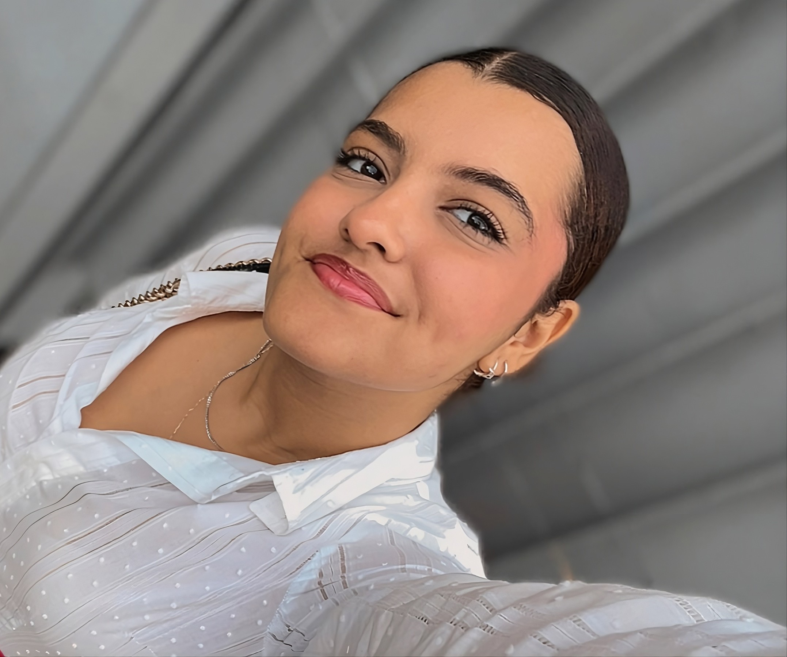
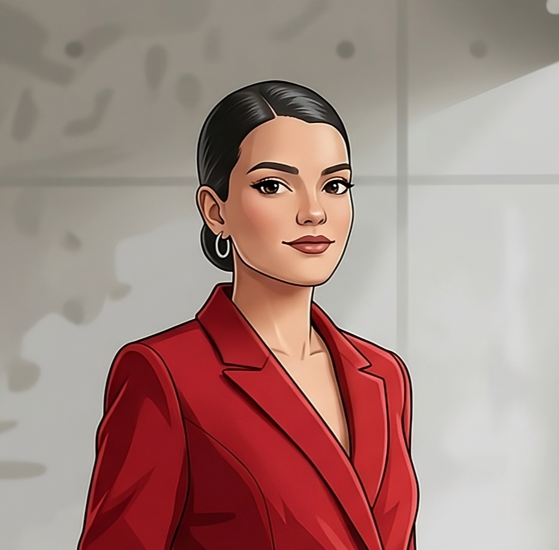

Contigo Seguros
Pasantía · Politecnico
2021 - 2022 ( durante 7 meses)
PORTFOLIO
PORTFOLIO
Apasionada por el desarrollo frontend y la creación de experiencias digitales. Me encanta crear interfaces modernas, funcionales y visualmente atractivas, combinando creatividad, tecnología y atención al detalle en cada proyecto.

Pasantía · Politecnico
2021 - 2022 ( durante 7 meses)Diseño de interfaces · soporte en TI.
2025 ( durante 4 meses)Desarrollo de Software · Soporte Técnico
2026 — actualidadUI/UX · Experimental · Editorial